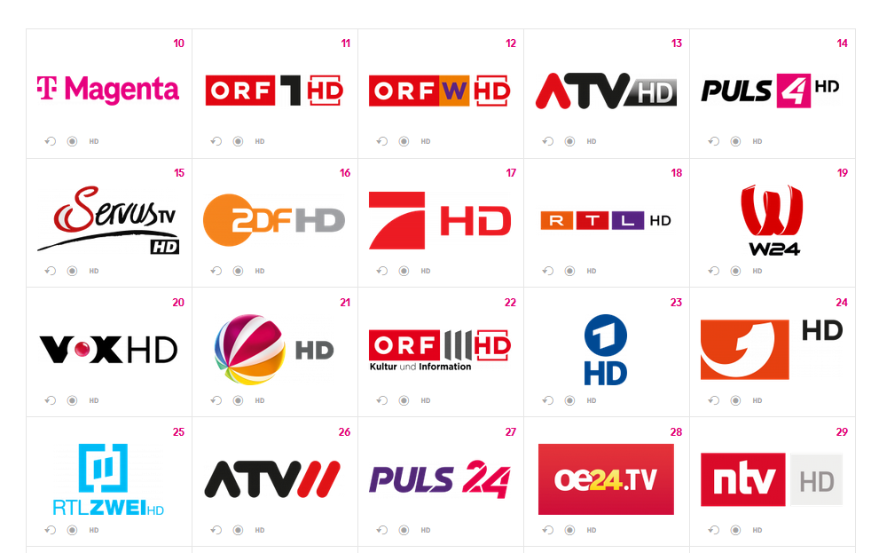

{kind=link}
Am 4.9.2023 um 11:22 schrieb Karo:Hallo zusammen, ja, bei den Sky Sendern ist eine Aufnahme möglich.
Die SKY Aufnahme Funktion war schon unter UPC-Zeiten möglich, warum sollte dies jetzt bei Magenta anders sein?.

Hallo,
ist es wirklich so, dass wenn ich das Sky Sport Paket über Magenta empfange, kein Sky Sport Programm (z.B. Live Fußballspiele) aufnehmen kann?
Am 10.8.2023 um 11:30 schrieb forsti:ist es wirklich so, dass wenn ich das Sky Sport Paket über Magenta empfange, kein Sky Sport Programm (z.B. Live Fußballspiele) aufnehmen kann?
Hey, soweit ich sehe, kannst du auf Sky nichts aufnehmen:
Das fehlt das Aufnahmesymbol wie es bei den anderen Kanälen vorhanden ist:

Schau dir gerne die Webseite dazu näher an: https://www.magenta.at/tv/tv-kanaele#/uebersicht.
LG RS.
Am 10.8.2023 um 11:30 schrieb forsti:Hallo,
ist es wirklich so, dass wenn ich das Sky Sport Paket über Magenta empfange, kein Sky Sport Programm (z.B. Live Fußballspiele) aufnehmen kann?
Das Aufnahmesymbol im EPG ist bei allen Sendern vorhanden und man (ich) kann alle Skysender (nicht nur Sport) aufnehmen.
Hallo zusammen, ja, bei den Sky Sendern ist eine Aufnahme möglich.
Euer Feedback bezüglich der Ansicht auf unserer Webseite haben wir weitergegeben, damit es hier zu einer Anpassung kommt. LG Karo
Am 4.9.2023 um 11:22 schrieb Karo:Hallo zusammen, ja, bei den Sky Sendern ist eine Aufnahme möglich.
Die SKY Aufnahme Funktion war schon unter UPC-Zeiten möglich, warum sollte dies jetzt bei Magenta anders sein?.